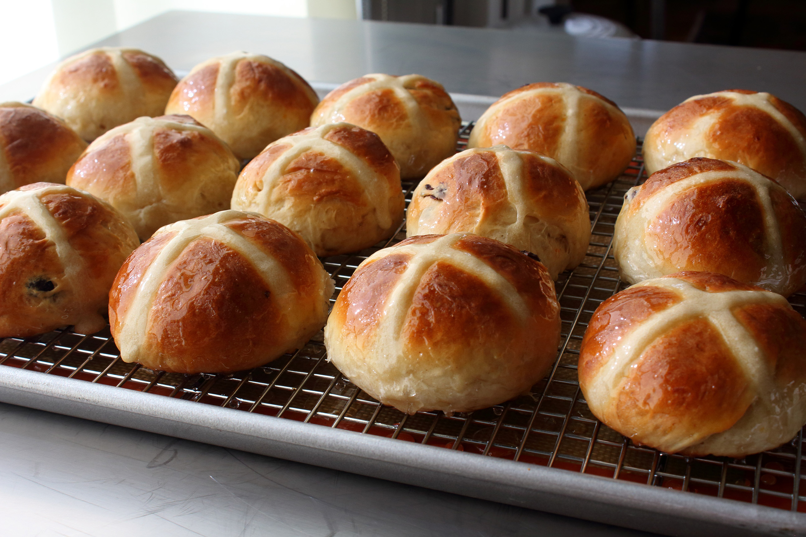

Hot Cross Bun

Description
Ingredients
- 1/4 cup dried currants
- 1/4 cup rum, or as needed to cover currants
- 3/4 cup milk, warmed to 100 degrees F/40 degrees C
- 3 cups bread flour, divided, or as needed
- 1.25 ounce package active dry yeast
- 5 tablespoons white sugar
- 1 large egg, beaten
- 1 tablespoon grated lemon zest
- 1 tablespoon grated orange zest
- 3/4 teaspoon ground cinnamon
- 1/2 teaspoon fine salt
- 1/2 teaspoon ground cardanmom
- 1/4 teaspoon ground nutmeg
- 7 tablespoons melted butter
Crosses
- 1/4 cup water
- 1/3 cup all-purpose flour, or as needed to make thin, pipe-able dough
Glaze
- 1/4 cup sugar
- 3 tablespoons water
Steps
- Place currants in a small bowl. Heat rum until steaming in a small pan and pour over currants to soften them, about 2 hours. Drain; reserve liquid for another use.
- Whisk warm milk, 1/4 cup flour, and yeast together in the bowl of a stand mixer. Let sit about 15 minutes to ensure yeast is active; small bubbles should start to rise to the surface. Add sugar, beaten egg, lemon and orange zest, cinnamon, salt, cardamom, nutmeg, melted butter, and most of the remaining flour (you might not need it all). Mix with a dough hook attachment until dough pulls away from the sides of the bowl and becomes slightly elastic, 5 or 6 minutes. Continue kneading until dough is soft and shiny, about 10 minutes. Remove dough from dough hook and shape into a ball. Transfer to a lightly floured work surface.
- Flatten dough into a large oval about 1/2 inch thick. Sprinkle currants evenly over surface of dough. Fold dough into thirds. Turn and fold into thirds again. Reshape dough into a round ball. Transfer to lightly oiled mixing bowl. Cover and let rise in a relatively warm, draft-free place until double in size, about 2 hours.
- Poke dough down a bit with your fingertips. Transfer to a lightly floured work surface. Flatten out dough into an even shape. Divide into 16 equal pieces using a bench scraper.
- Line a baking sheet with a silicone mat.
- Roll each piece of dough into a round ball. Arrange evenly on prepared baking sheet. Let rise 15 minutes.
- Mix 1/4 cup water and 1/3 cup flour together in a mixing bowl until mixture is thick enough to hold its shape but thin enough to pipe. Transfer mixture to a piping bag
- After buns have risen 15 minutes, pipe a cross on top of each. Let rise until doubled from original dough balls, another 15 or 20 minutes.
- Preheat oven to 425 degrees F (220 degrees C).
- Transfer pan to preheated oven. Bake until golden brown, about 15 minutes.
- Combine 1/4 cup sugar and 3 tablespoons water in a pan over medium heat. Bring to a simmer and cook until sugar dissolves and mixture starts to thicken, or until it reaches a temperature of 225 degrees F. Remove from heat.
- Let buns cool on a rack for 5 minutes before glazing. Brush glaze lightly over the tops of the buns.
Return to front page